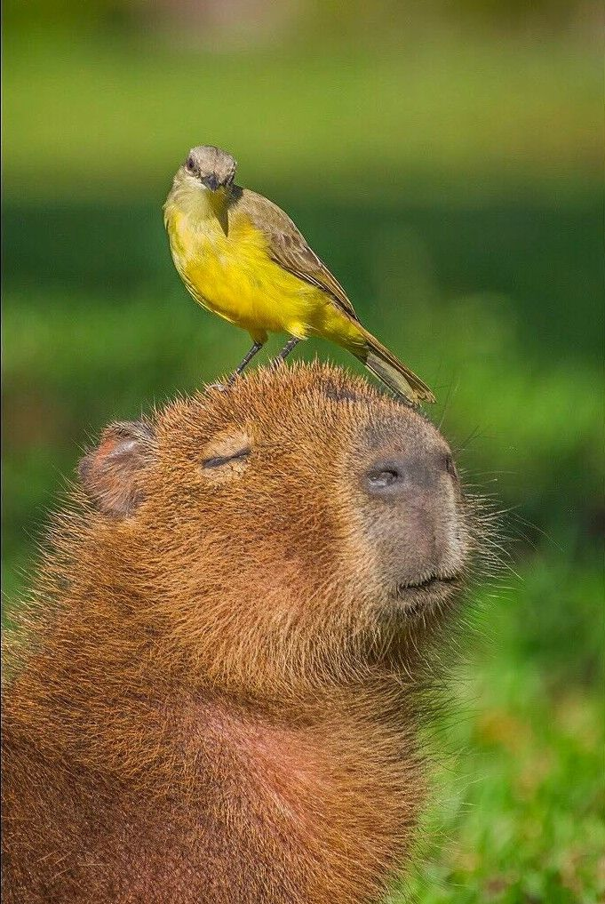
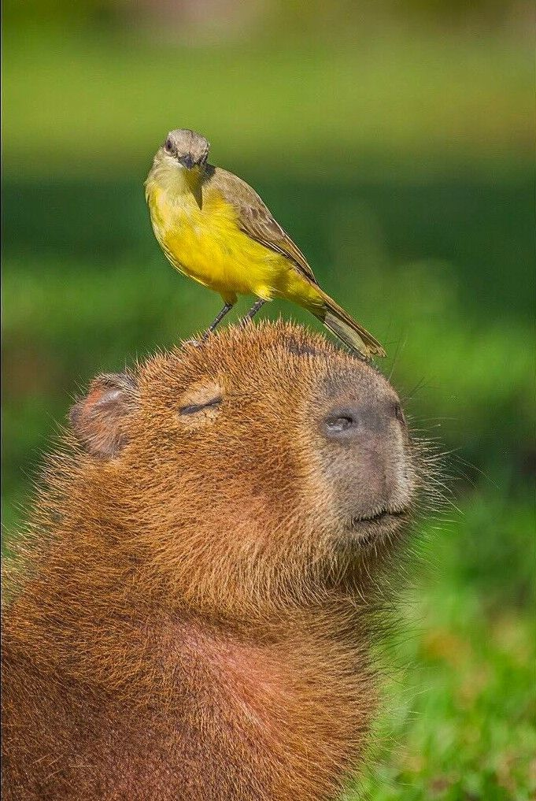

A capybara kinézete
 


A vízidisznó Földünk legnagyobb rágcsálója. A kifejlett példányok testhossza 106-134 centiméter, marmagassága 50-62 centiméter, testtömege 35-66 kilogramm. A legnagyobb talált hím 73,5 kilogramm, a legnagyobb talált nőstény pedig 91 kilogramm volt. A hímek kisebbek a nőstényeknél. A vízidisznó egy óriási tengerimalacra hasonlít. Szőrzete rövid sörteszerű, színe vörösesbarna. Feje nagy, szemei sötétbarnák, fülei kicsik. Farka szinte alig van. Mellső lábain 4, a hátsókon 3 lábujja van. Lábujjai között kicsi úszóhártyák találhatók, amivel rendkívül jól úszik.